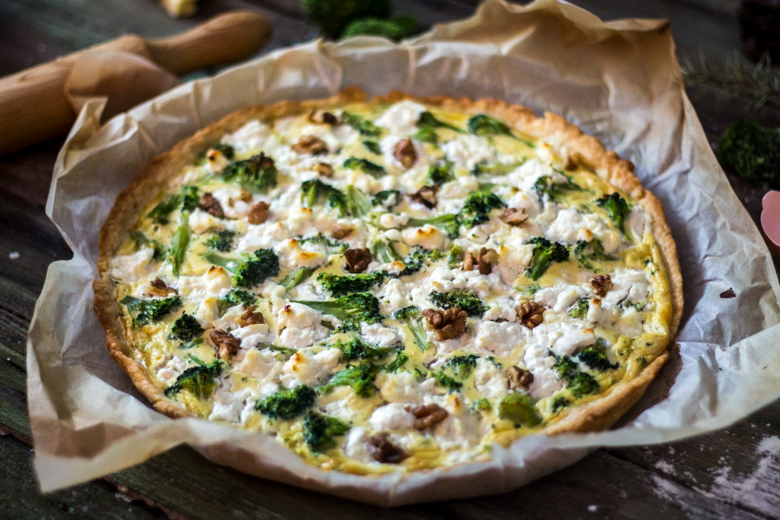

Tarte aux brocolis
Pas toujours évident de manger des brocolis! Pourtant paraît-il que c’est bon pour la santé alors je vous propose aujourd’hui ma tarte brocolis, fromages et noix pour un repas sain et gourmand!
Il y a quelque temps de ça je vous parlais de ma pâte sablée pour tarte salée (recette ici) et il en va de soi que je n’avais pas préparé une pâte à tarte juste pour le plaisir mais bien pour préparer une délicieuse tarte aux brocolis!!
J’en rigole encore en écrivant l’article car si j’avais su que mon chéri allait aimer cette recette je l’aurai faite bien plus tôt! C’est simple, pour ceux qui ne le savent pas, au début de notre relation il était impossible de lui faire avaler un seul légume (« surtout s’il était de couleur verte« ) et encore moins de lui faire sentir du fromage ou un champignon! Aujourd’hui, il en redemande 🙂 Je n’ai qu’une explication à ça, à mon avis l’amour ne rend pas aveugle mais « agueusie » qui est le terme courant utilisé pour expliquer la perte de la perception du goût (ou c’est que je suis une super bonne cuisinière)!!
En tout cas peu importe la raison nous nous sommes tous les deux régalés avec cette nouvelle recette et c’est pourquoi j’ai décidé de la partager avec vous!
Le brocolis, qui est un chou de la famille des crucifères, venu tout droit d’Italie aurait des propriétés bénéfiques sur notre santé cardiovasculaire mais aussi anti-cancer grâce à ses composés bio actifs qu’il contient alors pourquoi s’en priver!!
Dans cette tarte, j’ai associé le brocoli à un peu de fromage de chèvre frais, de brousse et de quelques noix alors si vous voulez vous laisser tenter, la recette est juste par en bas et j’espère qu’elle vous plaira!
Enregistrer
Ingrédients
- Brocolis - 350g
- Brousse (de chèvre) - 120g
- Chèvre frais - 80
- Oeufs - 2
- Crème liquide - 150ml
- Noix - une dizaine
- Pâte sablée - 1
- Noix de muscade - 3-4 pincées
- Sel, poivre
Instructions
- Étaler votre pâte dans un moule à tarte et piquer la avec une fourchette. Réserver au frais
- Préchauffer le four à 180°
- Laver les brocolis et égouttez-les
- Séparez-les en fleurettes
- Mélanger les œufs avec la crème dans un bol
- Saler, poivrer et ajouter la noix de muscade (3-4 pincées)
- Ajouter les brocolis et mélanger
- Verser la préparation sur la pâte à tarte et parsemez de chèvre et de brousse coupés grossièrement.
- Ajouter les noix grossièrement coupées entre vos doigts et enfourner
- Laisser cuire 30-35 minutes environ en surveillant régulièrement
- Laisser reposer 5 minutes puis servez sans plus attendre!!

Les tips de la communauté
Recette positive avec un intérêt marqué pour son utilité à faire manger des légumes verts. Les commentaires célèbrent l'originalité du mariage brousse-brocoli et la qualité des photos.
Astuces
- La recette est une bonne solution pour faire accepter les légumes verts par les enfants
- Ne pas précuire le brocoli : le découper en petites fleurettes et le cuire directement dans la tarte
- Le brocoli cuit bien au four sans pré-cuisson
- La pâte maison est meilleure que la pâte du commerce
Variantes suggérées
- Utiliser du chou-fleur à la place du brocoli pour une variation
- Ajouter des saucisses végétales pour les végétariens
- Remplacer la brousse par de la ricotta ou de la mozzarella
Ajustements signalés
- Le mélange œufs/crème peut ne pas être suffisant par rapport au volume de fleurettes de brocoli, ce qui peut les faire brunir excessivement